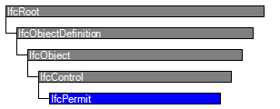
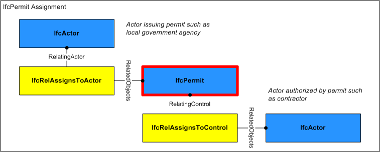

Natural language names
 | Erlaubnis / Zulassung |
 | Permit |
 | Permis |
| Erlaubnis / Zulassung |
| Permit |
| Permis |
| Item | SPF | XML | Change | Description | IFC2x3 to IFC4 |
|---|---|---|---|---|
| IfcPermit | MOVED | Schema changed from IFCFACILITIESMGMTDOMAIN to IFCSHAREDMGMTELEMENTS. | ||
| OwnerHistory | MODIFIED | Instantiation changed to OPTIONAL. | ||
| Identification | X | MODIFIED | Name changed from PermitID to Identification. Instantiation changed to OPTIONAL. | |
| PredefinedType | ADDED | |||
| Status | ADDED | |||
| LongDescription | ADDED |
A permit is a permission to perform work in places and on artifacts where regulatory, security or other access restrictions apply.
HISTORY New entity in IFC2x2.
IFC4 CHANGE Attribute PermitID renamed to Identification and promoted to supertype IfcControl, attributes PredefinedType, Status, and LongDescription added.
| # | Attribute | Type | Cardinality | Description | C |
|---|---|---|---|---|---|
| 7 | PredefinedType | IfcPermitTypeEnum | [0:1] | Identifies the predefined types of permit that can be granted. | X |
| 8 | Status | IfcLabel | [0:1] | The status currently assigned to the permit. | X |
| 9 | LongDescription | IfcText | [0:1] | Detailed description of the request. | X |

| # | Attribute | Type | Cardinality | Description | C |
|---|---|---|---|---|---|
| IfcRoot | |||||
| 1 | GlobalId | IfcGloballyUniqueId | [1:1] | Assignment of a globally unique identifier within the entire software world. | X |
| 2 | OwnerHistory | IfcOwnerHistory | [0:1] |
Assignment of the information about the current ownership of that object, including owning actor, application, local identification and information captured about the recent changes of the object,
NOTE only the last modification in stored - either as addition, deletion or modification. | X |
| 3 | Name | IfcLabel | [0:1] | Optional name for use by the participating software systems or users. For some subtypes of IfcRoot the insertion of the Name attribute may be required. This would be enforced by a where rule. | X |
| 4 | Description | IfcText | [0:1] | Optional description, provided for exchanging informative comments. | X |
| IfcObjectDefinition | |||||
| HasAssignments | IfcRelAssigns @RelatedObjects | S[0:?] | Reference to the relationship objects, that assign (by an association relationship) other subtypes of IfcObject to this object instance. Examples are the association to products, processes, controls, resources or groups. | X | |
| Nests | IfcRelNests @RelatedObjects | S[0:1] | References to the decomposition relationship being a nesting. It determines that this object definition is a part within an ordered whole/part decomposition relationship. An object occurrence or type can only be part of a single decomposition (to allow hierarchical strutures only). | X | |
| IsNestedBy | IfcRelNests @RelatingObject | S[0:?] | References to the decomposition relationship being a nesting. It determines that this object definition is the whole within an ordered whole/part decomposition relationship. An object or object type can be nested by several other objects (occurrences or types). | X | |
| HasContext | IfcRelDeclares @RelatedDefinitions | S[0:1] | References to the context providing context information such as project unit or representation context. It should only be asserted for the uppermost non-spatial object. | X | |
| IsDecomposedBy | IfcRelAggregates @RelatingObject | S[0:?] | References to the decomposition relationship being an aggregation. It determines that this object definition is whole within an unordered whole/part decomposition relationship. An object definitions can be aggregated by several other objects (occurrences or parts). | X | |
| Decomposes | IfcRelAggregates @RelatedObjects | S[0:1] | References to the decomposition relationship being an aggregation. It determines that this object definition is a part within an unordered whole/part decomposition relationship. An object definitions can only be part of a single decomposition (to allow hierarchical strutures only). | X | |
| HasAssociations | IfcRelAssociates @RelatedObjects | S[0:?] | Reference to the relationship objects, that associates external references or other resource definitions to the object.. Examples are the association to library, documentation or classification. | X | |
| IfcObject | |||||
| 5 | ObjectType | IfcLabel | [0:1] |
The type denotes a particular type that indicates the object further. The use has to be established at the level of instantiable subtypes. In particular it holds the user defined type, if the enumeration of the attribute PredefinedType is set to USERDEFINED.
| X |
| IsDeclaredBy | IfcRelDefinesByObject @RelatedObjects | S[0:1] | Link to the relationship object pointing to the declaring object that provides the object definitions for this object occurrence. The declaring object has to be part of an object type decomposition. The associated IfcObject, or its subtypes, contains the specific information (as part of a type, or style, definition), that is common to all reflected instances of the declaring IfcObject, or its subtypes. | X | |
| Declares | IfcRelDefinesByObject @RelatingObject | S[0:?] | Link to the relationship object pointing to the reflected object(s) that receives the object definitions. The reflected object has to be part of an object occurrence decomposition. The associated IfcObject, or its subtypes, provides the specific information (as part of a type, or style, definition), that is common to all reflected instances of the declaring IfcObject, or its subtypes. | X | |
| IsTypedBy | IfcRelDefinesByType @RelatedObjects | S[0:1] | Set of relationships to the object type that provides the type definitions for this object occurrence. The then associated IfcTypeObject, or its subtypes, contains the specific information (or type, or style), that is common to all instances of IfcObject, or its subtypes, referring to the same type. | X | |
| IsDefinedBy | IfcRelDefinesByProperties @RelatedObjects | S[0:?] | Set of relationships to property set definitions attached to this object. Those statically or dynamically defined properties contain alphanumeric information content that further defines the object. | X | |
| IfcControl | |||||
| 6 | Identification | IfcIdentifier | [0:1] | An identifying designation given to a control It is the identifier at the occurrence level. | X |
| Controls | IfcRelAssignsToControl @RelatingControl | S[0:?] | Reference to the relationship that associates the control to the object(s) being controlled. | X | |
| IfcPermit | |||||
| 7 | PredefinedType | IfcPermitTypeEnum | [0:1] | Identifies the predefined types of permit that can be granted. | X |
| 8 | Status | IfcLabel | [0:1] | The status currently assigned to the permit. | X |
| 9 | LongDescription | IfcText | [0:1] | Detailed description of the request. | X |
Approval Association
The Approval Association concept applies to this entity.
Approvals may be associated to indicate the status of acceptance or rejection using the IfcRelAssociatesApproval relationship where RelatingApproval refers to an IfcApproval and RelatedObjects contains the IfcPermit. Approvals may be split into sub-approvals using IfcApprovalRelationship to track approval status separately for each party where RelatingApproval refers to the higher-level approval and RelatedApprovals contains one or more lower-level approvals. The hierarchy of approvals implies sequencing such that a higher-level approval is not executed until all of its lower-level approvals have been accepted.
Property Sets for Objects
The Property Sets for Objects concept applies to this entity as shown in Table 248.
| ||||||||||||||||
Table 248 — IfcPermit Property Sets for Objects |
Aggregation
The Aggregation concept applies to this entity as shown in Table 249.
| |||||||||
Table 249 — IfcPermit Aggregation |
Object Nesting
The Object Nesting concept applies to this entity as shown in Table 250.
| ||||
Table 250 — IfcPermit Object Nesting |
Control Assignment
The Control Assignment concept applies to this entity.
Figure 271 illustrates assignment relationships as indicated:
The IfcPermit may have assignments of its own using the IfcRelAssignsToControl relationship where RelatingControl refers to the IfcPermit and RelatedObjects contains one or more objects of the following types:
 |
Figure 271 — Permit assignment |
| # | Concept | Model View |
|---|---|---|
| IfcRoot | ||
| Software Identity | Common Use Definitions | |
| Revision Control | Common Use Definitions | |
| IfcObject | ||
| Object Occurrence Predefined Type | Common Use Definitions | |
| IfcControl | ||
| IfcPermit | ||
| Approval Association | Common Use Definitions | |
| Property Sets for Objects | Common Use Definitions | |
| Aggregation | Common Use Definitions | |
| Object Nesting | Common Use Definitions | |
| Control Assignment | Common Use Definitions | |
<xs:element name="IfcPermit" type="ifc:IfcPermit" substitutionGroup="ifc:IfcControl" nillable="true"/>
<xs:complexType name="IfcPermit">
<xs:complexContent>
<xs:extension base="ifc:IfcControl">
<xs:attribute name="PredefinedType" type="ifc:IfcPermitTypeEnum" use="optional"/>
<xs:attribute name="Status" type="ifc:IfcLabel" use="optional"/>
<xs:attribute name="LongDescription" type="ifc:IfcText" use="optional"/>
</xs:extension>
</xs:complexContent>
</xs:complexType>
ENTITY IfcPermit
SUBTYPE OF (IfcControl);
PredefinedType : OPTIONAL IfcPermitTypeEnum;
Status : OPTIONAL IfcLabel;
LongDescription : OPTIONAL IfcText;
END_ENTITY;
 Instance diagram
Instance diagram Link to this page
Link to this page